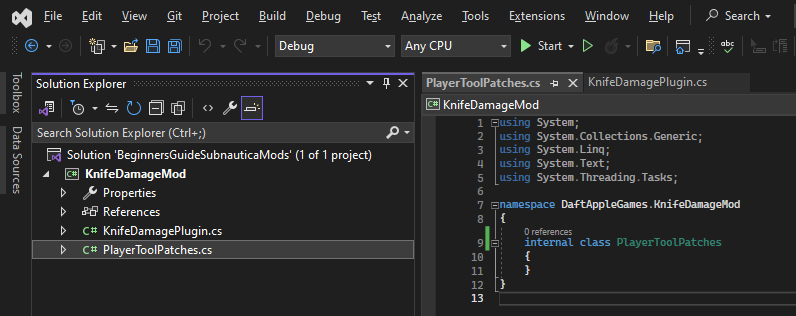

Coding your mod
Time to write some C# code. Just to note, each time we add some code, I'll show the full content of the file at that point in time. It will make this section seem longer, but it will hopefully remove any confusion of what goes where and when.
What I do, and this is completely down to personal preference, is to have a single class to handle registering the mod and managing options. I always call this class <modname>pluigin, but you can call it whatever you want. We'll stick with this for the tutorial.
NOTE: When I refer to your project, don't confuse that with your solution!
By default, the template will have created a class for you. Right click Class1.cs within your project and choose rename. Give the class a name such as KnifeDamagePlugin. Visual Studio will helpfully rename the class for you, as well as the file.
You\'ll want to refer to those lovely references we added, so first up, add these statements. This allows us access to the Harmony classes and methods necessary to patch in our mod code, as well as BepInEx classes and methods for things like logging.
using BepInEx;
using BepInEx.Logging;
using HarmonyLib;
We'll need to tell BepInEx a bit about our mod, so add this annotation and information at the beginning of the class. We'll assume that we're using Nautilus at some point, so we'll add the necessary attributes to our code to let the plugin framework know.
Finally, we'll tell Harmony to patch our code, and we'll set up a static "Logger" so we can write debug information from code within our plugin. Let's also set the namespace in line with our assembly definition:
using BepInEx;
using BepInEx.Logging;
using HarmonyLib;
namespace DaftAppleGames.KnifeDamageMod
{
[BepInPlugin(MyGuid, PluginName, VersionString)]
[BepInDependency("com.snmodding.nautilus")] // marks Nautilus as a dependency for this mod
public class KnifeDamagePlugin : BaseUnityPlugin
{
private const string MyGuid = "com.daftapplegames.knifedamagemod";
private const string PluginName = "Knife Damage Mod";
private const string VersionString = "1.0.0";
private static readonly Harmony Harmony = new Harmony(MyGuid);
public static ManualLogSource Log;
private void Awake()
{
Harmony.PatchAll();
Logger.LogInfo(PluginName + " " + VersionString + " " + "loaded.");
Log = Logger;
}
}
}
Some things to note:
- The "KnifeDamagePlugin" class inherits from "BaseUnityPlugin" class. If you forget to add this, your code will compile but BepInEx won't "see" your mod.
- The
MyGuidvalue aims to be unique across all mods. This can technically be anything, but a recommended approach is to use something like:Your name / Discord name.Mod Name, as I've done in the example above. - The second and third parameters should reflect the name of the mod and current version.
Great stuff. This gives us what we need to load a mod, patch some code, and do some good!
So, we probably want to do something with the game code. Again, personal preference, but I like to create a new class for each class that I'm patching. Do that by right clicking on your project and selecting Add item.... Select Class and give it a sensible name. For this tutorial, we'll go for PlayerToolPatches.cs.
At this stage, your Visual Studio project should look a bit like this:

Open up new class file and add these using statements. This gives us the basics of what we need to tell Harmony what we're up to, and for us to reference game objects within our mod code:
using HarmonyLib;
We need to tell Harmony to patch the Awake method of the PlayerTool class. Remember we talked about "Prefix" and "Postfix" patches? In this scenario, we want to let the game initialise the knife and then we tweak the damage afterwards. So we need to use a "Postfix patch":
using HarmonyLib;
namespace DaftAppleGames.KnifeDamageMod
{
[HarmonyPatch(typeof(PlayerTool))]
internal class PlayerToolPatches
{
[HarmonyPatch(nameof(PlayerTool.Awake))]
[HarmonyPostfix]
public static void Awake_Postfix(PlayerTool __instance)
{
// Our code goes here
}
}
}
I like to keep order in my code, and I follow the class and method naming convention as above where I can.
NOTE: What you call your classes isn't important. It's the annotationsthat matter - those are the values you see in square brackets within the code. You can find lots of information about these, and how Harmony works, in the Harmony user guide, but we'll talk a little about these below.
When you patch a class with Harmony, you can always get access to the class "instance" using the __instance parameter. What this gives us is a handle to the actual instantiated component instance that's executing the method that we've intercepted. This means we can directly manipulate the component, ready it's contents, and modify it's properties.
Before we can do that, we have an instance of PlayerTool but what we actually need is an instance of a Knife, which is a class that inherits from PlayerTool. That's fine, we can do this in C# as follows:
// Check to see if this is the knife
if (__instance is Knife knife)
{
// We can now safely refer to "knife" via Knife class methods and properties
}
Now that we have a Knife instance, we can modify it's properties:
using HarmonyLib;
namespace DaftAppleGames.KnifeDamageMod
{
[HarmonyPatch(typeof(PlayerTool))]
internal class PlayerToolPatches
{
[HarmonyPatch(nameof(PlayerTool.Awake))]
[HarmonyPostfix]
public static void Awake_Postfix(PlayerTool __instance)
{
// Check to see if this is the knife
if (__instance is Knife knife)
{
// Write a line to our debug log
KnifeDamagePlugin.Log.LogInfo($"Knife damage is {knife.damage}");
// Make the knife do 5 times more damage
knife.damage *= 5.0f;
// Write a line to our debug log
KnifeDamagePlugin.Log.LogInfo($"Knife damage increased to {knife.damage}");
}
}
}
}
Believe it or not, we're pretty much done here!
You can build this now by right clicking the project and selecting Build. All going well, you'll see Build succeeded. If not, go back through and check your code.
Remember that you can see the full source of the tutorial in this GitHub repository, so if you have any problems whatsoever, have a look at the source in the repo and compare it to what you have.
Your Post Build Scripts should also have run, creating a folder in your game location and copying in the DLL file, giving the game everything it needs to run your snazzy new mod!
Congratulations! It's a beautiful bouncing baby knife mod!
Pro Tip - Annotations and Parameters
We added these lines of code to "tell" Harmony how to patch the code:
[HarmonyPatch(typeof(PlayerTool))]
[HarmonyPatch(nameof(PlayerTool.Awake))]
and this one:
[HarmonyPostfix]
These are what are called "annotations" or "attributes" and these form the basis of how Harmony hooks your code into the game. You can find out more about Harmony annotations on the Harmony website.
Something else to look at here is the method definition:
public static void Awake_Postfix(PlayerTool __instance) {}
We have some options here around what parameters we specify in our PostFix method:
- We can always include
__instancein our method arguments, and this will always pass in the class instance on which the method was invoked. - We can also pass in parameters from the game method, if we want to manipulate or refer to those, either directly or by reference.
- For prefix scenarios, we can choose to skip the original method altogether by returning a
falsebool, or we can allow the method to run by returning atruebool. - We can specify
__resultas arefparameter of the same type used by the patched method, to override the return value of the patched method, if it happens to have a return value. For example, if we're patching a method that takes twointparameters and returns afloat, and we wanted to manipulate that return value, we could write:
[HarmonyPreFix]
public static bool KnifeMethodWithReturn(Knife __instance, int param1, int param2, ref float __result)
{
// Check the input params
if(param1 > param2)
{
// Manipulate the float return
__result = 0.0f;
// Bypass the patched method
return false;
}
else
{
// Continue to call the patched method
return true;
}
}
Things get quite involved at this point, as there are a number of rules and options that apply to your method definition, depending on what you want to do and what Harmony annotation you're using. The best place to find out more is in the Harmony documentation, which explains the concepts in detail.